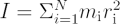

The Moment of Inertia is often given the symbol I. It is the rotational analogue of mass. In Newtonian physics the acceleration of a body is inversely proportional to mass. In Newtonian rotational physics angular acceleration is inversely proportional to the moment of inertia of a body. You can think of the moment of inertia as the ability to resist a twisting force or torque.
For rotation about a fixed point, the moment of inertia of a body I is given by the sum of all the constituent particles masses mi multiplied by their radius ri from the fixed point squared. ie

The angular momentum of a solid object is just Iω where ω is the angular velocity in radians per second. Angular momentum in a closed system is a conserved quantity just as linear momentum P=mv (where m is mass and v is velocity) is a conserved quantity.
Some moments of inertia for various shapes/objects
For a uniform disk of radius r and total mass m the moment of inertia is simply 1/2 m r2.
For a solid sphere I=2/5 m r2.
A point particle of mass m in orbit at a distance r from an object has a moment of intertia of I=mr2.